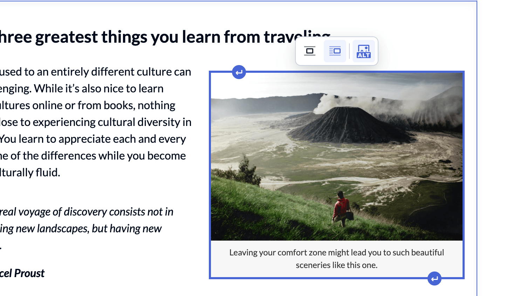

Deep dive into widget internals
Widgets are self-contained, object-like elements in the editor content (such as images, tables, or media embeds) that users select and move as a single unit. This guide covers advanced widget internals: configuring the type-around feature and excluding DOM events from a widget’s default handlers.
The WidgetTypeAround plugin allows users to type around the widgets, in places where it is normally impossible to place the caret due to limitations of the web browsers. Although this feature boosts productivity and ease of typing, some integrations may not want or need it, for instance:
- When the UI of the feature collides with the integration.
- When typing outside widgets should be impossible (content made exclusively of widgets).
- When certain widgets have a fixed location in the document that should never change.
In the sections that follow, you will learn how to configure CKEditor 5 WYSIWYG editor to address these specific needs.

The easiest way to get rid of the type-around widget buttons is to hide them using CSS. Put the following code snippet anywhere in your application and the buttons will no longer be displayed:
.ck.ck-editor__editable .ck-widget .ck-widget__type-around__button {
display: none;
}If you only want to customize the type around widget buttons, you can use the same CSS selector to modify their look or position.
Hiding the type around widget buttons does not disable the feature. Users will still be able to activate the caret before or after individual widgets using the arrow keys and typing. Learn how to disable the entire feature.
Although the WidgetTypeAround plugin is an integral part of the widget subsystem and is loaded by default whenever an editor feature uses widgets (for instance, for images or tables), you can still disable it on the fly. Turning off the feature will both hide the widget buttons and disable other behaviors, for instance:
- The caret will not be rendered before or after a widget when the user navigates the document using arrow keys.
- The Enter and Shift+Enter keystrokes will no longer insert paragraphs if pressed when a widget is selected.
Use the forceDisabled() method of the plugin to disable it on the fly like in the snippet below:
ClassicEditor
.create( {
// The editor's configuration.
// ...
} )
.then( editor => {
const widgetTypeAroundPlugin = editor.plugins.get( 'WidgetTypeAround' );
// Disable the widget type around plugin.
widgetTypeAroundPlugin.forceDisabled( 'MyApplication' );
} )
.catch( err => {
console.error( err.stack );
} );You can always re–enable the plugin using the following snippet
widgetTypeAroundPlugin.clearForceDisabled( 'MyApplication' );Refer to the API documentation to learn more.
Sometimes it can be useful to prevent processing of events by default handlers, for example using React component inside an UIElement in the widget where, by default, widget itself wants to control everything. To make it possible the only thing to do is to add a data-cke-ignore-events attribute to an element or to its ancestor and then all events triggered by any of children from that element will be ignored in default handlers.
Let’s see it in an short example:
<div data-cke-ignore-events="true">
<button>Click!</button>
</div>In the above template events dispatched from the button, which is placed inside <div> containing data-cke-ignore-events attribute, will be ignored by default event handlers.